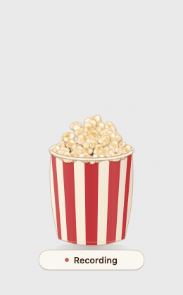
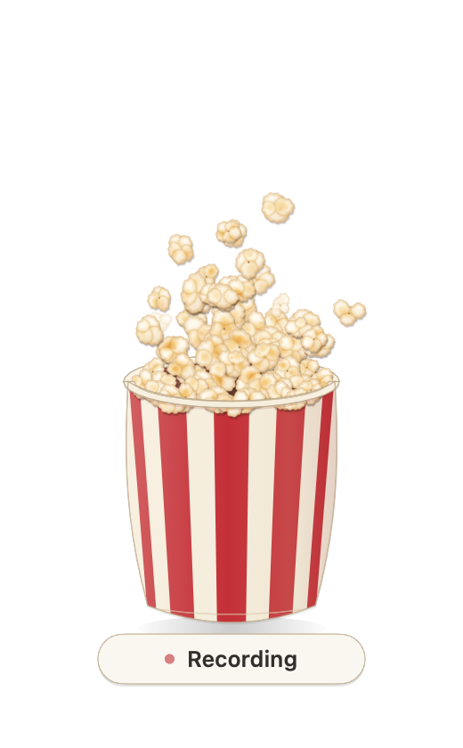
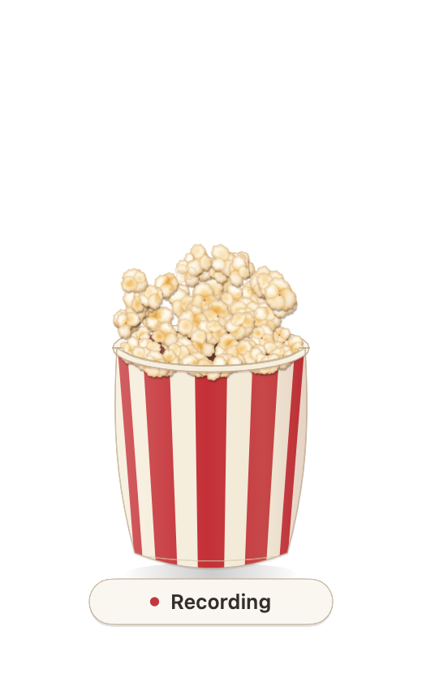

Push-to-talk dictation for macOS. Hold FN, speak, release — the text types itself into whatever app you were in.

Apple Silicon · macOS 13+ · free and open source
Built-in macOS dictation is cloud-backed, punctuates badly, and gives no honest signal that it is listening. VoicePop does three things Apple's version does not do together: stay on the device, start typing in under a second, and look like it is listening so you are not talking into a void.
It is a menu-bar app wrapping a local speech engine (Voxtype, MIT, by peteonrails) plus the parts that make dictation usable day to day: a HUD driven by live mic amplitude, per-app writing styles, and corrections that stick.
Text lands in the focused app. Esc cancels.
NVIDIA Parakeet tdt-0.6b-v3-int8 by default, Whisper Tiny through Large-turbo as fallbacks. No network calls in the dictation path.
Kernel physics driven by real mic amplitude at 60 fps, then a Transcribing capsule, then gone. Honors Reduce Motion.
Automatic, Casual, or Formal, with per-app overrides — Messages to Casual, Mail to Formal. Terminals are never restyled.
Fix the last thing typed, hit Save & Learn, and the substitution applies from then on. Plain JSON on disk.
Formal style can run through a local LLM (qwen3.5:4b-mlx via Ollama). If it is slow or down, rules output ships unchanged inside a 5 s budget.
The same scene at four microphone levels. Kernel count and motion follow your actual voice, not a canned animation.


.dmg from Releases, open it, and drag VoicePop onto Applications.FN keypress ──► Voxtype daemon ──► ASR (Parakeet / Whisper, Metal)
│ │
mic amplitude raw transcript
(unix socket) │
▼ ▼
PopcornHUD (SwiftUI) voxtype-clean ──► style rules ──► learned
60 fps kernel sim (post-process) (per-app) replacements
│ │
└────────────► "Transcribing…" ◄─────────────────────┘
│
Voxtype types it ──► focused app
Swift packages: PopcornCore (audio framing, physics, text clean, style, corrections — the tested part), PopcornArt (renderers), PopcornHUD (menu bar, windows, watchers), and VoxtypeClean (the post-processor Voxtype shells out to).
State is plain JSON in ~/.config/voicepop/ — style.json, history.jsonl (rotates at 1 MiB, delete to clear), corrections.jsonl, and replacements.json. Nothing is transmitted. Details in SECURITY.md.